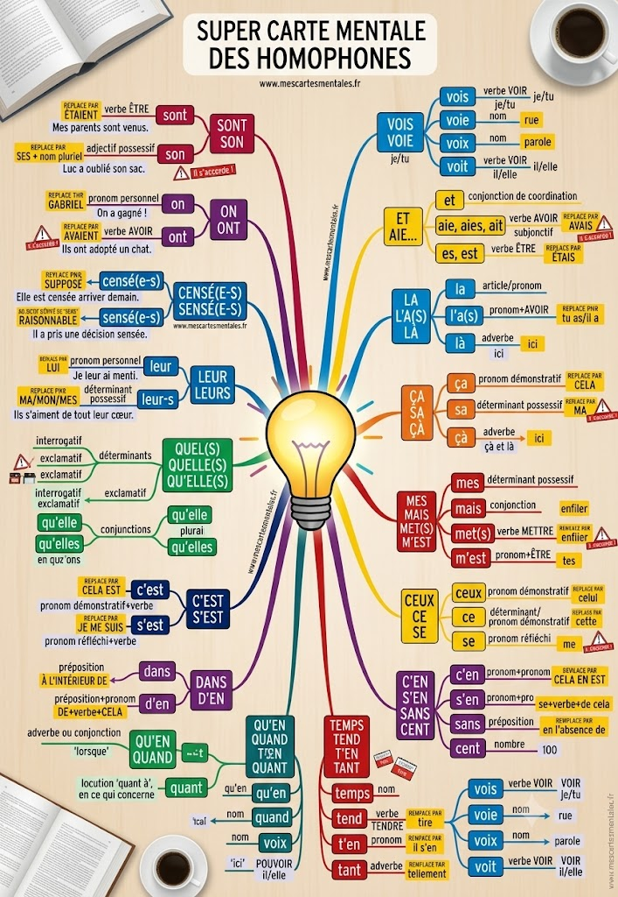

Les homophones
Bien distinguer les homophones
Qu'est-ce qu'un homophone ?
Des homophones sont des mots qui se prononcent de la même façon mais qui s'écrivent différemment et n'ont pas le même sens ni la même nature grammaticale (a / à, ces / ses, on / ont...). Ce sont une source d'erreurs très fréquente au brevet, en dictée comme en rédaction.
La méthode universelle : pour chaque homophone, on applique un test de remplacement. Si on peut remplacer le mot par un autre mot test (souvent en le mettant à un autre temps, à un autre genre ou en le développant), on sait quelle orthographe utiliser.
1. Les indispensables
2. CE / SE, CES / SES, C'EST / S'EST, SAIS / SAIT
3. LA / L'A(S) / LÀ — ÇA / SA / ÇÀ
4. LEUR / LEURS — QUEL(S) / QUELLE(S) / QU'ELLE(S)
5. MES / MAIS / MET(S) / M'EST — CEUX / CE / SE
6. DANS / D'EN — C'EN / S'EN / SANS / CENT
7. QUAND / QU'EN / QUANT / QU'ON — TEMPS / TEND / T'EN / TANT
8. VOIS / VOIE / VOIX / VOIT
La méthode à retenir pour tous les homophones
1) J'identifie les mots qui se prononcent pareil dans la phrase.
2) Je me demande quelle est la nature de chaque candidat (verbe ? nom ? déterminant ? pronom ?).
3) J'applique le test de remplacement propre à cet homophone (changer de temps, de personne, remplacer par un synonyme...).
4) Si le remplacement fonctionne dans la phrase, j'ai trouvé la bonne orthographe !
Pièges à éviter
Les erreurs les plus fréquentes au brevet
Ces pièges reviennent très souvent en dictée et en rédaction. Vérifie-les systématiquement lors de ta relecture !
SON accordé avec le possesseur au lieu du nom
❌ Erreur : penser que "son" varie selon si le possesseur est un homme ou une femme.
✅ "Son" et "sa" s'accordent avec le nom qui suit, pas avec le genre du possesseur.
Marie a perdu son stylo. (stylo = masculin → son, même si Marie est une femme)
LEUR avec un -s alors qu'il est pronom
❌ "Je leurs ai dit" est une faute très fréquente.
✅ Quand "leur" est pronom (placé devant un verbe, remplaçable par "lui"), il est toujours invariable : jamais de -s !
Je leur ai dit. (= je lui ai dit) → pas de -s
Confondre CES et SES
CES = pas d'idée de possession, on montre du doigt (= ce/cette au pluriel).
SES = idée de possession (= son/sa au pluriel).
Ces chaussures sont neuves (je les montre) / Il a mis ses chaussures (les siennes).
Oublier l'apostrophe dans QU'ELLE / QU'EN / C'EST...
Beaucoup d'homophones sont en réalité deux mots réunis par une apostrophe (élision du "e" de "que", "ce", "se"...). Pense à toujours décomposer : qu'elle = que + elle ; c'est = ce + est ; s'en = se + en.
Cette décomposition est la clé du test de remplacement.
A / À : le piège du verbe avoir muet
À l'oral, on ne fait pas la différence, donc on l'oublie facilement à l'écrit.
Réflexe systématique : à chaque "a" rencontré, teste mentalement "avait". Si ça marche → pas d'accent. Si ça ne marche pas → accent grave.
Confondre CENSÉ et SENSÉ
Censé (avec un C) = supposé faire quelque chose.
Sensé (avec un S) = qui a du sens, raisonnable.
Nul n'est censé ignorer la loi. / C'est une remarque sensée.
Carte mentale
Clique sur l'image pour l'agrandir. Cette carte résume la quasi-totalité des homophones vus dans la leçon.
Super carte mentale des homophones

Créer ma fiche de révision
Personnalise ta fiche
Les indispensables
CE / SE / SAVOIR
LA / ÇA
LEUR / QUEL
MES / CEUX
DANS / SANS
QUAND / TEMPS
VOIR
Pièges
Aller plus loin
Vidéos
Recherche YouTube : les homophones Maîtrisez les homophones ! (3/4) 10 astuces pour améliorer son écritExercices
Ortholud — Homonymes et homophones Français Facile — Exercices Amélioration du français — Collection Homophones Lingolia — Homophones grammaticauxJeux et quiz
Lumni — Ses/ces/s'est/c'est/sait/sais LogicielEducatif — Et / est Et/est, son/sont — jeuGrand jeu
Un jeu complet pour t'entraîner sur tous les homophones en t'amusant !
Godzilla : Protocole Titan